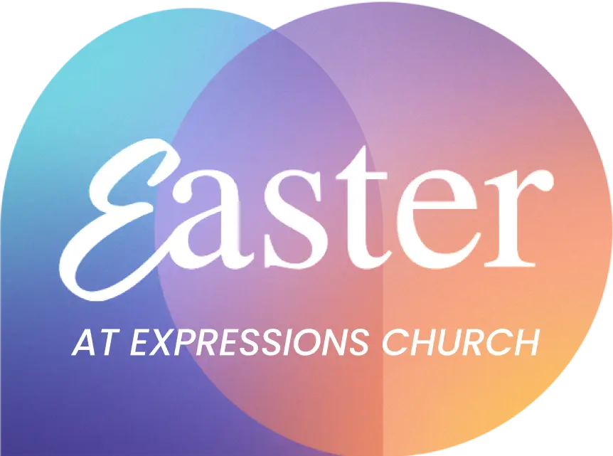
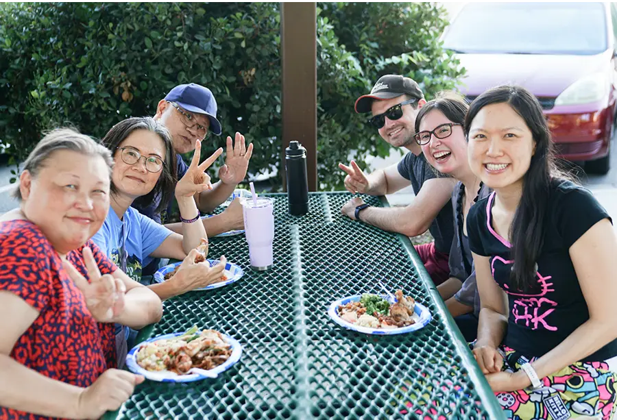
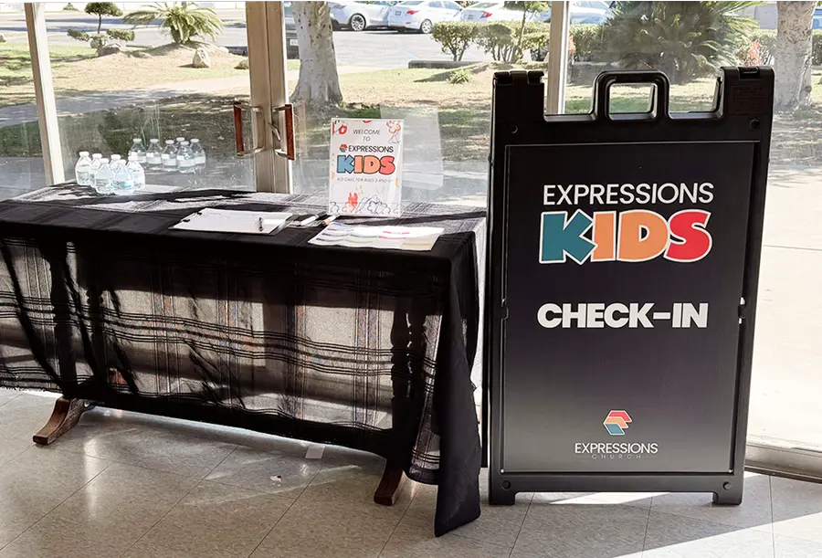
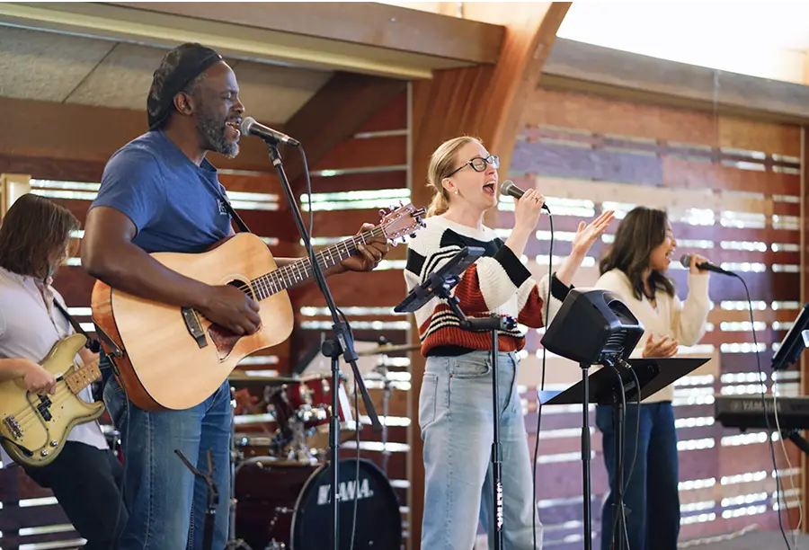
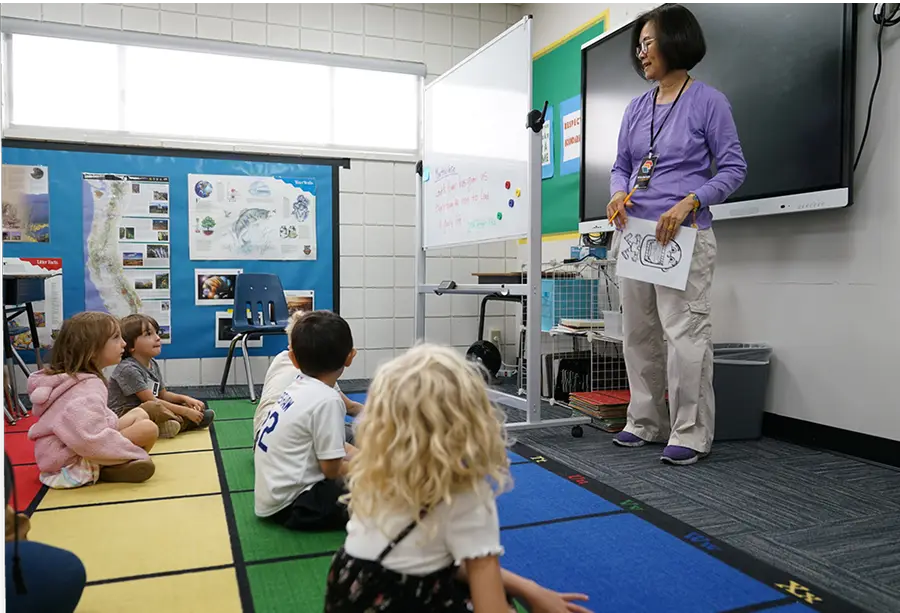
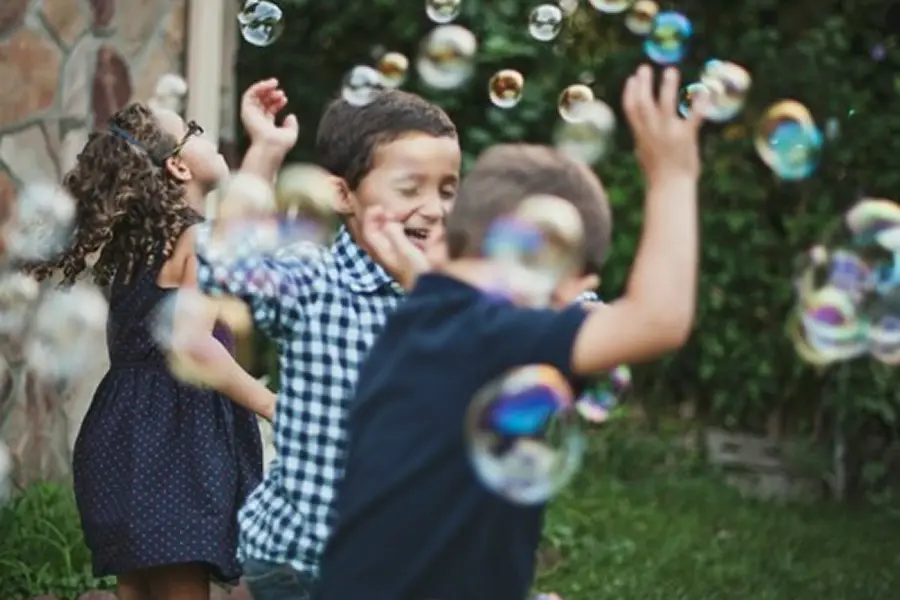

April 20, 2025 | 10 AM
Free Event—Open to All!
Breakfast Starts at 9:30 AM
Easter Bunny Photo Booth
Egg Hunt & Lawn Games
Each kid gets a prize!Kids Program
Childcare Available
Free On-Site Parking
No Dress Code
Come as you are!

Celebrate Easter Sunday in Pasadena in Our New Home!
Join us this Sunday for our first Easter at our new location! Enjoy a free continental breakfast, Egg Hunt & Easter Bunny, and games!
April 20, 2025 | 10:00 AM
2540 E. Orange Grove Blvd. Pasadena, CAFull Schedule
9:30 AM – 10:00 AM
Continental Breakfast
Come early for a light breakfast, great company, and delicious coffee from Rosebud Coffee by Coffee With A Cause (a Pasadena café that empowers at-risk youth through job training)!
RSVP for Easter Sunday!Got kids? Check them in!
Did you know we have a program for kids ages 3-10 and childcare at Expressions Church? Register your child before service with the laptop at the Check-In table in the lobby. Our team will help you get set up.
Discover Expressions Kids10:00 AM – 11:30 AM
Family Worship & Sermon
Our Easter Sunday service will begin at 10AM with live worship music—blend of contemporary Christian songs and heartfelt melodies. Following worship, our lead pastor Christopher will share a message of hope and renewal.
Watch our latest sermonExpressions Kids
After worship, children are dismissed to their own fun program, following their teachers to the class.
Learn more11:30 AM – 12:30 PM
Family Fun & Games
We’re keeping the celebration going after service with:
- 🐰 Meet the Easter Bunny
- 🥚 Egg Hunts with prizes for kids of all ages
- ⚽️ Lawn games and family activities
- 📸 Photo ops and sweet treats
Baptisms
For those who are ready to commit their life to Christ, we have baptism available. You can witness (or experience!) this declaration of life transformation.
Ready to take this next step of faith? Curious about baptism?
Sign up and we'll reach out!
Sign-Up for BaptismJoin us!
You've made it this far—That means something.
We would love to see you and your family this Easter Sunday.
RSVP now so we can plan for breakfast, Easter egg hunt, prizes and more for each kid!